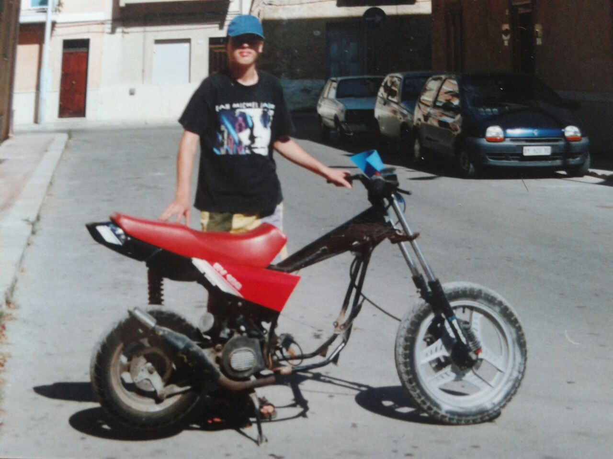
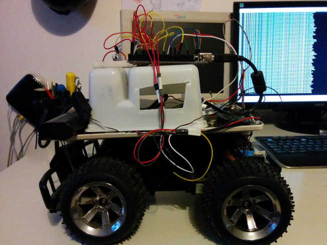
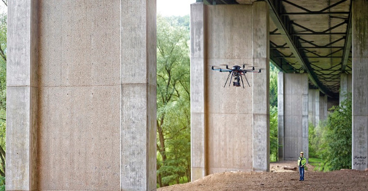
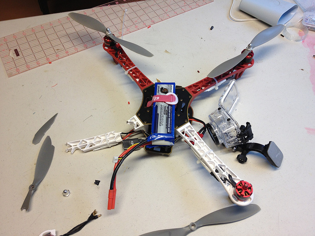

Hello, I'm Daniele Ingrassia
Welcome to my repository!
Here you can find my works @
FabAcademy 2015.
I won’t hide behind the work that I am doing or the studies that I have done in the past. I’m a dreamer. In my personal way of thinking this means that I always try to reach very difficult and often untrusted objectives that put me in a constant challenge with myself and that quickly change my cognition of what I am capable of.
 
- So, here are some of the things I had fun to do with:
- disassembling a car in order to make a dune buggy
- building a motorcycle with pieces taken from junkyard
- inventing a new kind of hybrid recommendation and profiling system used in the official mobile app of WU2013
- inventing an automatic topic recognition system that is capable to analyze free text
- making an Android controlled car with a toy car, a netbook motherboard and Arduino
- Having said this, here are some details on "normal" things:
- I’m a qualified technician in electrotechnics
- I’m an Information Technology engineer
- I work since the end of 2012 as a junior researcher at IS3 Lab of Engineering Ingegneria Informatica
- I’m specialized in A.I., specifically in PRACTical reasONIng sySTems and recommender systems
We are by now invaded by Unmanned Aerial Vehicles. They spread everywhere and for whatever kind of use, from taking an aerial video of a party to flying over a raging forest fire alerting firefighters, from hovering over a construction site conducting a building inspection to exploring dangerous places like war sites.

The use of such flying robotics in the form of small UAVs, also known as drones, is pervasive now but not only: its commercial growth is predicted to significantly increase and reach several tens billions of dollars worldwide over the next years.

However, in order to achieve this market increase, a multitude of issues needs to be addressed and several improvements need to be done. For example, talking about security, the drones on the market today don’t have anything that complain with obstacle avoidance, so they easily get crashed on people and things by inexperienced pilots. Furthermore, they don’t present any kind of mechanism to cooperate each other, or to obtain smarter behaviours.
- Accordingly to above examples, and due to my interest on A.I., what I want to do is to make a drone with such capabilities. So my goal is to acquire all the know-how on the today’s drones to build a smart quadcopter that offers the following extras:
- obstacle avoidance
- cooperation capabilities
The concept of cooperation I want to realize is intended as another use of the drones: the drones as building block material that can be modularly and autonomously assembled. In this direction I think at this quadcopter like a normal one, but equipped with advanced hardware and software components, and surrounded by a cage, in order to apply more sensors and to enable an autonomous assembly behaviour. I think about the cage as a light cubic frame for simplicity of drones assembling.
- The acronym I have chosen for this drone is AAVOID:
- Autonomous Assembly aVOIding Drone
Gmail and Google+: ingrassiada@gmail.com
Linkedin: Daniele Ingrassia
In this week i learned about principles and practices, project management.
Honestly i already watched some videos about digital fabrication and Neil's speeches so i'm not surprised, but for sure im excited on what we are going to start. Digital fabrication, as a lot of other things that we discover, is inspired by nature. But, what here is making the difference, is the fact that we are talking about one of the best feature that nature has built-in: self-reproduction. I was thinking about computer's CPU and memory as organizers of electrons via small quantified amounts of electricity, and due to this I was imagining a program as an ordered bunch of electrons groups. When i learned about digital fabrication this point of view has become obsolete as we now have the next step of this: a piece of code not just describe a thing, it's a thing itself.
Do you like this site ?
Even if i'm a Information Technology engineer, i'm not familiar with html and css because i often work with backend's services and components. So i liked this part in which i had the opportunity the study a bit of these things. I prefer big fonts to help readability, and don't like pages full of text or little details, i just want to put only the things that are strictly needed and nothing else. The same strategy i will use for additional web components. Also, if you don't want to read all the text, you can just follow the red words to understand the main keywords and topics of the page you are looking.
What about git?
We often use git at work, so i'm not new of this kind of distributed version control. However i was happy (when i was able of!) to help my fellow students when they needed.
week2 computer-aided design
week3 computer-controlled cutting
week4 electronics production
week5 3D scanning and printing
week6 electronics design
week7 embedded programming
week8 computer-controlled machining
week9 molding and casting
week10 input devices
week11 output devices
week12 composites
week13 networking and communications
week14 mechanical design, machine design
week15 interface and application programming
week16 applications and implications
week17 invention, intellectual property, and income
week18 project development
week19 project presentation
This work is licensed under the terms of the GNU Lesser General Public License v2.1 (LGPL)